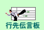
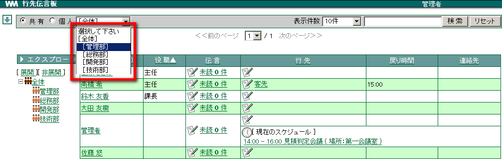
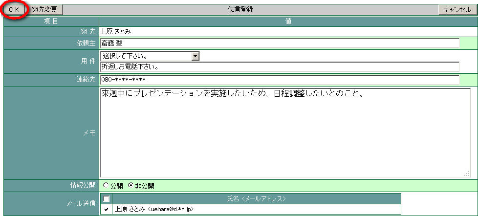
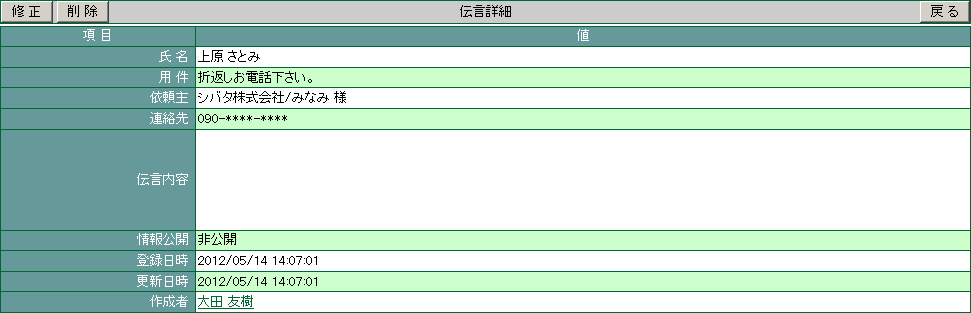

7. 行先伝言板¶
部署のメンバーの外出先と戻り時間が確認できるので、電話応対する際に便利です。また、受けた伝言を入力できるので、電話メモを担当者の机に貼り付けたりする必要がなくなります。
7.1. 行先伝言板の一覧を切り替える¶
一覧するユーザーを部署ごとに絞り込むことができます。
メニューの  をクリックします。
一覧したいユーザーが所属する [部署] をプルダウンメニューから選択します。


7.1.2. 個人情報を確認する¶
氏名をクリックすると、その人の個人情報を確認することができます。


7.2. 行先を登録する¶
「行先」はスケジュールに登録されている内容が反映されます。「行先伝言板」で新たに行先を設定した場合、スケジュールから反映されている「行先」の上に表示されます。
登録した行先・戻り時刻は自動的に消去できます。


7.3. 他のユーザーへ伝言を書き込む¶
他の人に伝言を書き込みましょう。
メニューの をクリックします。
伝言を書き込みたいユーザーの［伝言］の欄にある
 をクリックします。
をクリックします。
各項目を選択・入力し、 OK をクリックします。
「メール送信」にチェックを入れると、設定している E-Mail アドレスへ伝言内容が送信されます。

7.3.3. メール送信する場合¶
名前の前にチェックが付いている場合は、そのまま OK をクリックします。
チェックがついていない場合は、送信するかしないかを選択することができます。
チェックが付いている
[設定画面](個人情報) の「メール通知」の伝言が設定されている。
チェックが付いていない
[設定画面](個人情報) の「メール通知」伝言が設定されていない。または、伝言入力者本人のメールアドレスである。
7.4. 自分宛の伝言を確認する¶
自分宛に書き込まれている伝言を確認しましょう。
メニューの をクリックします。
自分の欄の「未読?件」をクリックします。

確認したい伝言の「用件」をクリックします。

詳細画面が表示されます。


 ・・・既に読んだ伝言
・・・既に読んだ伝言 ・・・まだ読んでいない伝言
・・・まだ読んでいない伝言